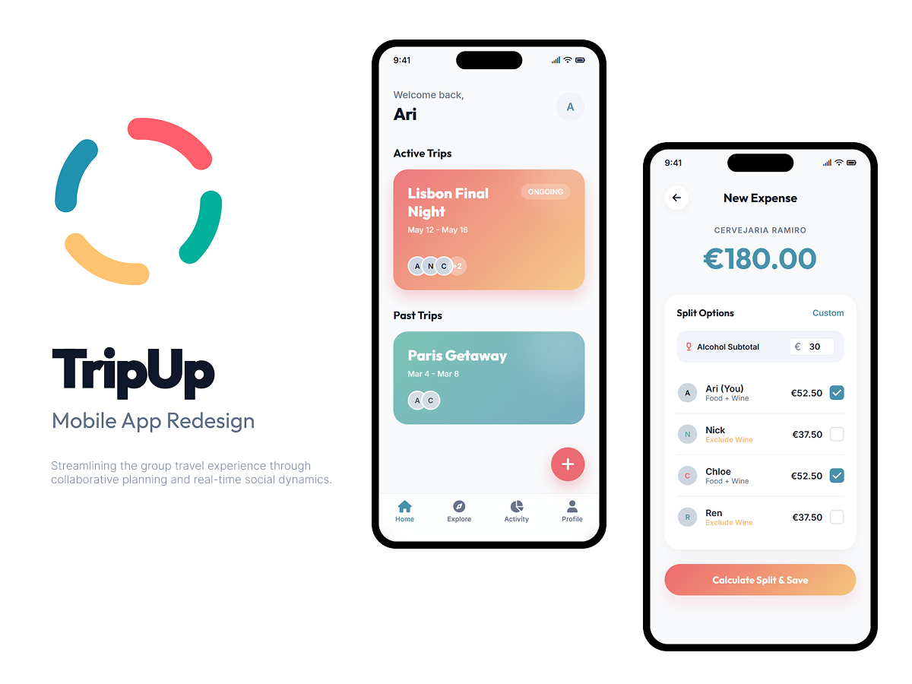

The Challenge & Vision

Streamlining the group travel experience
through collaborative planning and real-time social dynamics.

Typically the most proactive member. They set up the trip. invite others. and keep things moving.
Wants to be involved without being overwhelmed. They suggest ideas. vote on decisions. and stay informed.
Most choices happen on the fly. especially mid-trip. The app must support quick interactions.
Everyone wants input. Particularly on food and expenses. A collective voice is essential.
If something takes more than a few taps. users switch to WhatsApp. Intuitive logic is key.
Users prefer quick polls rather than chats. as long as the experience is intuitive.
Easy ways to manage and settle group expenses via digital methods or in-app payments.
When decisions are made. users expect instant updates in the shared itinerary.
This flowchart visualizes the end-to-end user journey, from initiating a quick group dinner poll to concluding with a frictionless expense settlement. By translating abstract user needs into concrete, actionable interface events, it maps out a seamless and intuitive functional flow.
Thank you for taking the time to review the TripUp Mobile App redesign project.